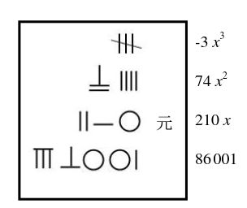

李冶创造了一套完整的多项式表达法。每个多项式写在一个方框里，各项按照“天元”的幂次，从上到下排列，天元一次幂那一项用“元”字标出，其上方各项相当于二次幂、三次幂等，一目了然。同一个方框内的各项相加，如果遇到相减，就在被减那一项的系数的最小有效值处斜画一杠，如图25所示。由此我们看到，李冶已经相当自如地引入负数了。他用圆圈来表示零，零的数位概念在他的著作中也已相当明确。至于“相等”的关系则仍然靠文字叙述——他还没有想到使用等号。

图 25： 李 冶 发 明 的 高 阶 多 项 式 表 示 方 法。 方 框 右 侧 标 出 的 是 每 一 行 相 应 的现 代 代 数 表 达 方 式。 合 起 来， 这 个 多项 式 就 是 -3x3+74x2+210x+86 001。 计算时，这个表达方式用于表达方程 -3x3 +74x2+210x+86 001=0。等号右边不必写出来（实际上他没有等号的符号）。他把所有的一元三次方程都写成 ax3+bx2+cx+d=0的形式，所有的系数可正可负。这里我们看到，他已经比奥马尔·海亚姆又前进了一大步，从此，所有的一元三次方程只需要一个表达方式就可以了
高次方程数值求解的技术在李冶的时代已经相当成熟。这是因为早于李冶二百年，北宋人贾宪（生卒年不详）发现了二项式高幂次展开的规律，现在称为“贾宪三角形”，并总结出了著名的增乘开方术。利用这个方法，对任何阶次的方程都可以求出数值解。可惜，李冶没有把方程的系数也符号化，进一步找到高次方程的普遍解。
1257年，拖雷的第四子忽必烈（公元1215—公元1294）负责总领漠南汉地事务，专请李冶询问国事。这时李冶已回到了离老家不远的河北元氏封龙山，在那里建立封龙书院，著书讲学。李冶来到开平，觐见忽必烈，对他说了一番推心置腹的肺腑之言，这段话翻译过来是这样的：“治理天下，说难可以难于上青天，说容易也可以易如反掌。有法，执法又有度，天下可治；不追求空名头而追责实效，天下可治；使用君子，远离小人，天下可治。这么说来，治理天下不是易如反掌么？没有法没有度，天下必乱；只有名而没有实，天下必乱；接近小人，远离君子，天下必乱。这么看来，治理天下不是难于上青天么？治理天下的方法，无非是立法度，正纲纪。有了纲纪上下才有正常的关系；有了法度，才能使赏罚明确，有惩有劝。可是今天的大小官员以至平民百姓，全都放纵享乐，以私害公，这就是无法无度。所以有功的人得不到奖赏，该被罚的人又不一定受罚，甚至有功者反而受到侮辱，有罪的人却得到宠信，这就是无法无度。现在法度已经废弃，纲纪也崩坏了，而天下还不乱，那已经是太幸运了。”
李冶这番话，是基于金国灭亡的血的教训，忽必烈听了，唯有连连点头称是。
1260年，忽必烈即皇帝位，请李冶担任翰林学士知制诰同修国史，李冶以老病为辞，婉言谢绝。他对朋友说：“世道相违，则君子隐而不仕。”意思就是说，遭逢乱世，君子就应当隐居而不入仕为官。又过几年，忽必烈降服了阿里不哥，平定了蒙古内战，再次招李冶为翰林学士知制诰同修国史。1265年，李冶来到燕京，勉强就职，参加修史工作。很快，他就感到翰林院不自由，处处都要秉承当官的旨意而不能畅所欲言，于是以老病为由辞职。
辞职以后，李冶回到封龙山著书讲学。他谆谆告诫学生：“学有三：积之之多不若取之之精，取之之精不若得之之深。”公元1279年李冶临终之际，把儿子叫到身边，对他说：“我一生写了很多著作，我死了以后，其他的书都可以烧掉，唯独这本《测圆海镜》，你一定要好好保存。这部书凝结了我的大半生心血，后世一定会把它的成果发扬光大的。”
李冶身后不到一百年，朱世杰（公元1249—公元1314）在《四元玉鉴》用“天元、地元、人元和物元”分别代表四个未知数，同时对四元高次方程进行求解。李、朱二卿（李冶字仁卿，世杰字汉卿）创造了中国数学史上一个辉煌的时期。
可惜这些划时代的工作后来在中华大地被忽视长达数百年。待到欧洲数学进入清朝宫廷，中国人才意识到自己已经大大落后了。有趣的是，康熙（公元1654—公元1722）看了西方代数学的介绍后，断言“算法之理，皆出于《易经》，即西洋算法亦善，原系中国算法，彼称为‘阿尔朱巴尔’（也就是阿尔热巴拉）者，传自东方之谓也”。梅觳成（公元1681—公元1764）则以《测圆海镜》和自己遵旨编纂的《数理精蕴》当中的例子，来比较“天元术”与西方代数，证明它们“名异而实同”，只不过中土“不知何故遂失其传，犹幸远人慕化，复得故物”。其实那时候，中国的数学早就大大落后于西方了。
数本难穷，吾欲以力强穷之，彼其数不唯不能得其凡，而吾之力且惫矣。然则数果不可以穷耶？既已名之数矣，则又何为而不可穷也！故谓数为难穷，斯可；谓数为不可穷，斯不可。何则，彼其冥冥之中，固有昭昭者存。夫昭昭者，其自然之数也？非自然之数，其自然之理也。数一出于自然，我欲以力强穷之，使隶首复生，亦末如之何也已。苟能推自然之理，以明自然之数，则虽远而乾端坤倪，幽而神情鬼状，未有不合者矣。
李冶《测圆海镜》序
文章有不当为者五，苟作一也，徇物二也，欺心三也，蛊俗四也，不可以示子孙五也。
（译：有五种文章不该做：一、随便敷衍之作；二、追寻物质报酬之作；三、违心之作；四、蛊惑庸俗之作；五、不能示以后代之作。）
李冶《敬斋古今注附录》
你来试试看？本章趣味数学题：
1.你能把王孝通的3x3+51x2+215x=5033用天元术的方法（图25）来表达吗？
2.如何把奥马尔·海亚姆的方程x3+4x-8=0用天元术方法表达
出来？